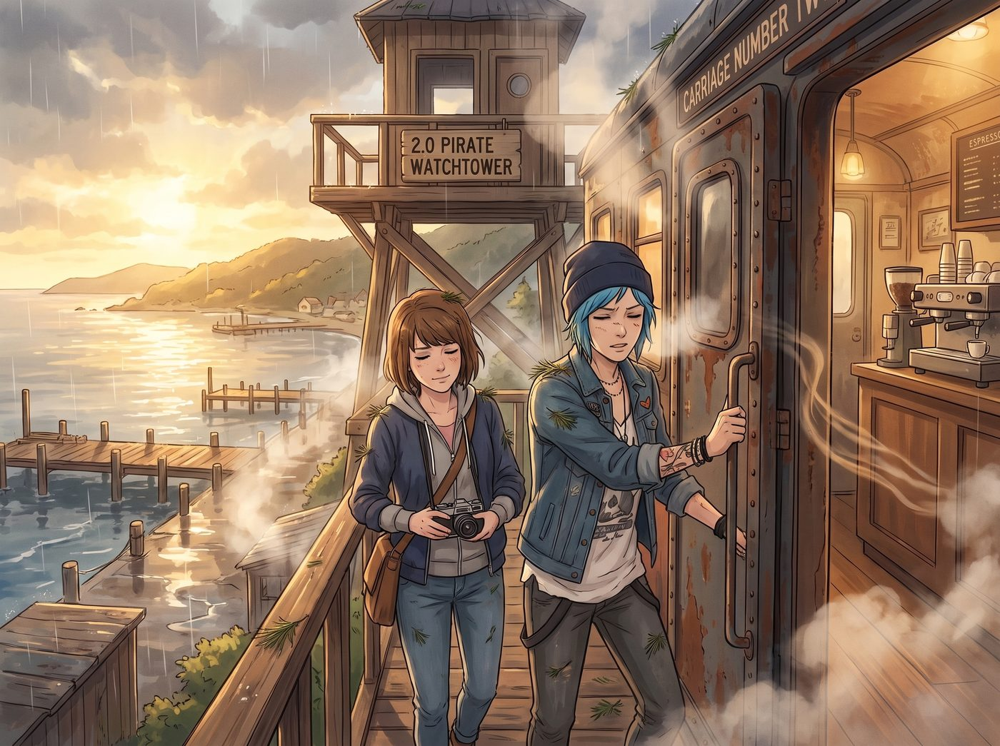

三明治擁抱

清晨七點，太平洋的陽光撕裂了厚重的雲層，將暴風雨洗刷過的海灣照得金光閃閃。
當 Chloe 和 Max 帶著滿身的松針味、冷空氣與略顯疲憊卻異常輕鬆的步伐，從 2.0 海盜瞭望塔爬下來，推開二號車廂的沉重鐵門時，迎接她們的，是一股濃烈到有些嗆人的義式濃縮咖啡味。
一、冰山女王的起床氣與破綻
Victoria Chase 穿著那件酒紅色的真絲睡袍，正抱著雙臂站在中島吧台前。她的金髮雖然依舊梳理得一絲不苟，但眼底那圈淡淡的烏青，以及咖啡機旁散落的四五個濃縮咖啡空膠囊，徹底出賣了她。
「妳們這兩個在廢鐵塔上吹了一夜冷風的白痴，終於捨得滾下來了嗎？」
名媛連頭都沒抬，直接開啟了火力全開的嘲諷模式：「Price，我早就說過妳那所謂的重工業級建築根本就是一堆毫無隔音效果的破銅爛鐵！昨晚風吹過鋼架的聲音，簡直就像有一萬隻發情的貓在我的車廂頂上慘叫！我的睡眠質量被妳們這種毫無階級公德心的違章建築徹底毀了！」
Chloe 昨晚在塔上剛剛經歷了深度的情緒宣洩，此刻的她不僅沒有像往常一樣像隻炸毛的貓一樣懟回去，反而眼神異常柔和。
她一邊脫下濕漉漉的外套，一邊笑著搖了搖頭。而跟在她身後的 Max，視線越過 Victoria 的肩膀，精準地捕捉到了吧台角落裡的一台機器。
那是一台 Chloe 用廢舊零件改裝的軍用級短波無線電。此刻，無線電的綠色指示燈還亮著，頻段被死死鎖定在普吉特海灣海岸警衛隊緊急氣象頻道。而在無線電旁邊，放著 Victoria 專用的那本小牛皮筆記本。
Max 走過去，輕輕瞥了一眼筆記本上用優雅花體字匆忙寫下的紀錄：風速計算、閃電擊中位置距基地的距離、海岸警衛隊救援直升機起飛條件確認。
二、鐵證如山下的階級嘴硬
「Victoria……」Max 捏著那本筆記本，嘴角忍不住瘋狂上揚，「妳說妳昨晚被風聲吵得睡不著，那為什麼這上面全都是風速計算和海岸警衛隊的聯絡方式？」
名媛的背脊瞬間僵硬了。她猛地轉過身，一把將筆記本從 Max 手裡搶了過來，臉頰以肉眼可見的速度浮現出一抹可疑的紅暈。
「這……這是在做資產風險評估！」Victoria 揚起下巴，試圖用最冷酷的總裁語氣掩蓋慌亂，「我的基金會有幾批昂貴的義大利手工傢俱正通過海運運往西雅圖！我身為負責人，徹夜監控航道氣象，確保我的財產不會沉進太平洋，這有什麼問題嗎？！」
「哦，是嗎？」Chloe 慢悠悠地走了過來，雙手插在工裝褲的口袋裡，臉上帶著那種看透一切的痞笑，「那妳這批義大利傢俱，是不是剛好叫 Maxine 和 Chloe 啊？而且還被放在一個隨時可能被風吹垮的廢鐵塔上？」
「Price！妳不要太自作多情了！」Victoria 氣急敗壞地退後一步，手裡的咖啡杯差點灑出來，「我只是怕妳們兩個死在我的地盤上，害得這塊土地的房地產估值暴跌，甚至讓我沾上晦氣的官司！」
三、前後夾擊：總裁防線的全面崩潰
這一次，Chloe 沒有陰陽怪氣，也沒有繼續拆穿她。
藍髮機械師只是輕輕嘆了口氣，走上前，突然張開雙臂，一把將那個還在喋喋不休、拼命進行階級辯護的名媛，從正面死死地抱進了懷裡。
「喂！Price！妳瘋了嗎？！」Victoria 嚇得整個人都僵住了，手裡的咖啡杯被 Chloe 順手抽走放在了桌上。
名媛開始瘋狂掙扎：「放開我！妳身上全是松針味和雨水的霉味！這是名貴的真絲睡袍！妳這個藍領流氓正在把價值兩千美金的布料變成抹布！」
「謝謝妳，大富婆。」Chloe 把下巴擱在 Victoria 的肩膀上，聲音低沉且無比真誠，甚至帶著一絲溫柔，「謝謝妳昨晚幫我們守夜。」
Victoria 愣住了。她原本準備好的一萬句刻薄話，在 Chloe 這句低沉的道謝中，瞬間像被戳破的氣球一樣洩得乾乾淨淨。
就在 Victoria 大腦當機、不知該如何應對這種平民的直球感恩時，Max 也從背後走了上來。
攝影師笑著張開雙臂，從背後環抱住了 Victoria 和 Chloe，將名媛徹底夾在了一個溫暖、潮濕且充滿松木香氣的三明治擁抱裡。
「也謝謝妳沒有真的打電話給海岸警衛隊，」Max 將臉貼在 Victoria 的背上，輕聲說道，「不然我們今天可能就要上西雅圖的社會新聞了。」
被這兩個渾身濕氣的傢伙前後夾擊，武力值為零的 Victoria 徹底失去了抵抗能力。
她的臉頰紅得像要滴血，雙手無處安放地懸在半空中。她拼命想要維持自己冰山女王的最後一絲尊嚴，只能咬著牙發出絕望的抗議：「妳們……妳們這兩個情緒氾濫的寄生蟲！我要扣光妳們下半年的底片預算和可樂份額！我要給這個車廂裝上人臉識別的電網！放開我！！」
嘴上喊得凶狠，但她懸在半空中的手，最終還是沒有推開 Chloe，而是極其生硬、極其不自然地，在 Chloe 沾著泥水的工裝背心上，輕輕地、傲嬌地拍了兩下。
「……好了，只准抱五秒鐘。多一秒我就叫律師。」Victoria 悶悶地嘟囔著。
這時，廚房的門被推開了。Kate 端著一大盤剛烤好的熱騰騰肉桂捲走了出來。看到客廳裡抱成一團的三個人，小天使露出了極度欣慰且毫無破綻的微笑。
「大家早安！看來昨晚的風暴讓大家的感情更好了呢。」Kate 將盤子放在桌上，溫柔地補了最後一刀，「Victoria，妳昨晚一直守在無線電旁邊，一定很冷吧？我特意幫妳多加了一杯熱牛奶哦。」
「Marsh！！我說了我是在看航運天氣！！」
二號車廂的清晨，伴隨著名媛惱羞成怒的咆哮與 Chloe 肆無忌憚的大笑，迎來了暴風雨後最溫暖的陽光。